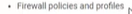

Server Migration Tool
Moving from office scan server to apex one server
Apex central policy do not cover:
- 
-
Configurações que vem com o server migration tool:
Smart protecttion sources
IfficeScan Client Port
1)

2)

3) Copiar para a parte de Office Scan do PC

4) Extrair e Run as administrator
5)Mover essas pastas para onde está o executavel do apex one console

6)

7)

8)Aparentemente deu certo porque não há agents